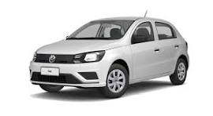

Volkswagen Gol 1.0, ano/modelo 2023, ideal para quem busca um carro econômico, confiável e prático para o dia a dia. Possui motor 1.0, bom desempenho para uso urbano e manutenção com peças de fácil acesso. É uma ótima opção para quem procura um veículo compacto, confortável e com bom custo-benefício. Veículo com excelente dirigibilidade, baixo consumo de combustível e espaço adequado para a categoria. Uma opção interessante tanto para uso pessoal quanto para trabalho.